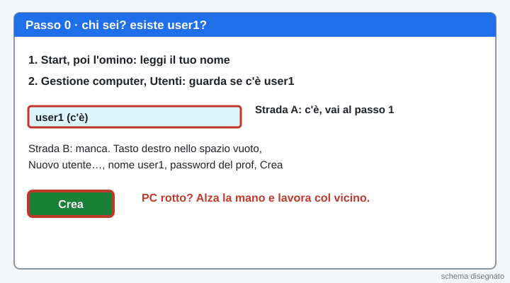
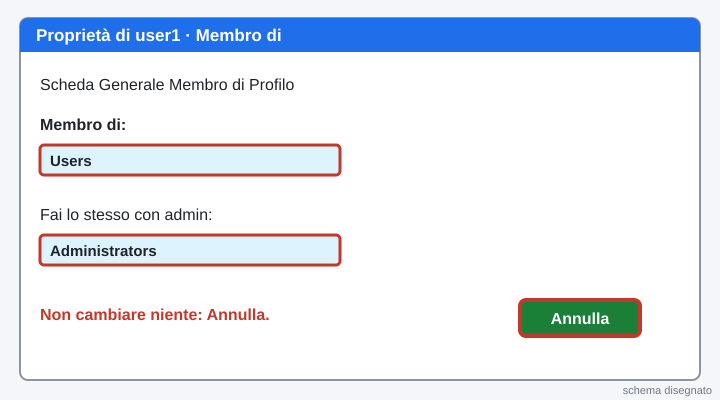
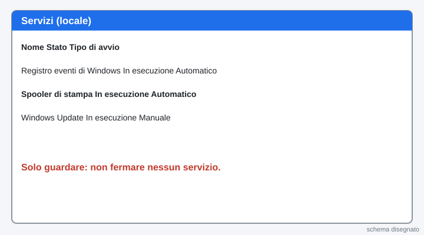
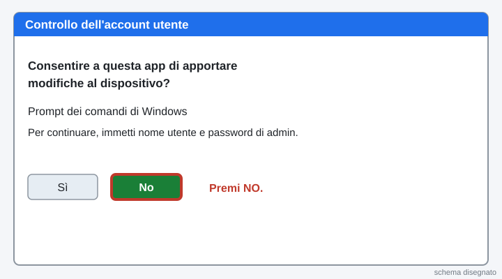
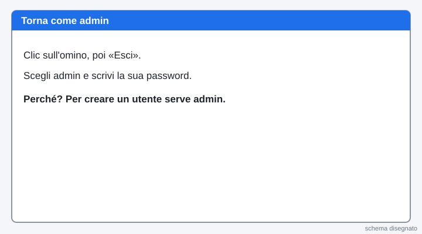
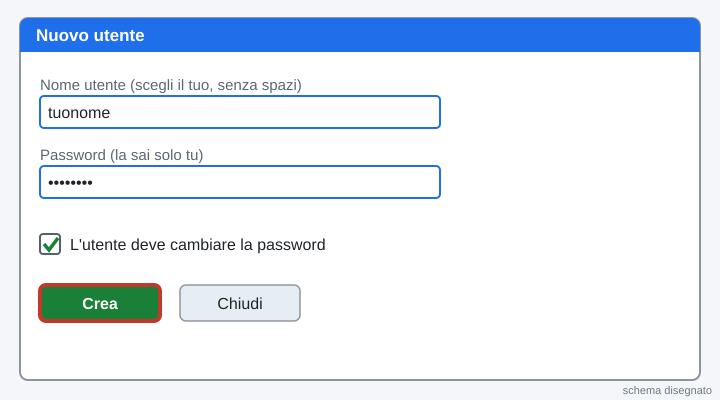
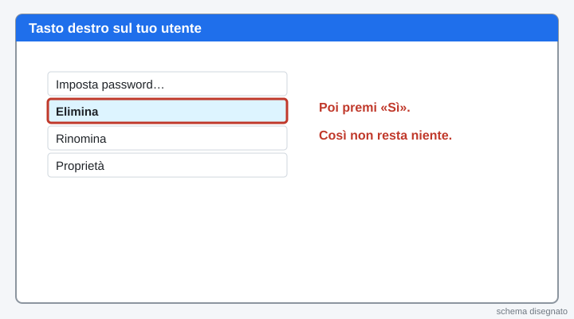
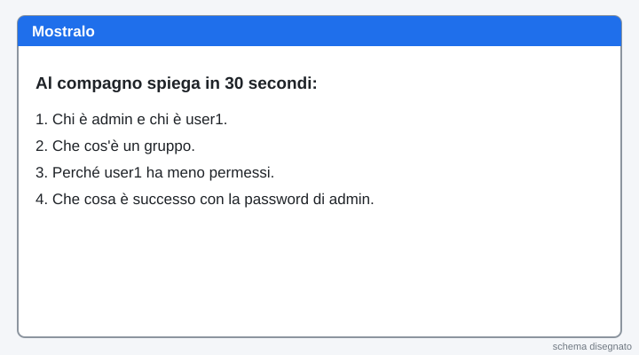
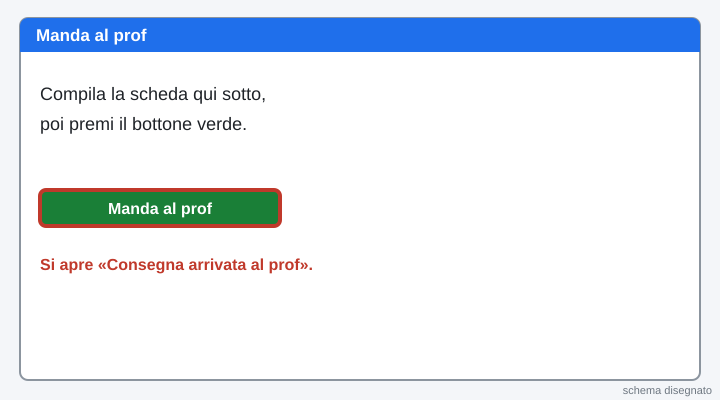

2INF · Laboratorio professionale · lunedì 09/11/2026 · ora 4 (11-12) · ognuno sul suo PC · si consegna la scheda con un bottone
Ora 4 · Gestione computer e Servizi: utenti e gruppi
La pagina viene aggiornata spesso durante la lezione: premi F5 per vedere la versione nuova.
Hai un dubbio sul lavoro? Scrivi all'assistente in fondo alla pagina: risponde subito. Il Professore serve per un PC rotto.
Chi sei?
Scrivi nome e cognome e scegli il numero del tuo PC (adesivo sul PC).
Sei bloccato? Scrivi la domanda nella casella dell'assistente in fondo alla pagina: ti risponde subito. Alza la mano solo se il PC non funziona.
La teoria in schede
Leggi dall'alto in basso. Una idea per scheda.

1. Che cos'è un account
Un account è il tuo nome dentro il PC. Con l'account Windows sa chi sei e che cosa puoi fare.
2. Amministratore e utente standard
L'amministratore può cambiare tutto: installare programmi e togliere altri utenti. L'utente standard usa il PC ma non può rompere il sistema. Quando prova a fare una cosa da amministratore, Windows apre una finestra (UAC) e chiede la password di admin.
3. Il gruppo
Un gruppo è una squadra di utenti con gli stessi permessi. Administrators è la squadra dei capi. Users è la squadra degli utenti normali.
4. Il servizio
Un servizio è un programma che lavora dietro le quinte, senza finestre. Per esempio quello che serve per stampare.
5. Perché user1 non è admin
Meno permessi ha un utente, meno danni può fare un errore o un virus. Si chiama principio del privilegio minimo.
Parole nuove
| Account | il nome con cui entri nel PC |
|---|---|
| Amministratore | utente che può cambiare tutto (qui: admin) |
| Utente standard | utente con meno permessi (qui: user1) |
| Gruppo | squadra di utenti con gli stessi permessi (Administrators, Users) |
| Servizio | programma che lavora dietro le quinte, senza finestra |
| Gestione computer | finestra di Windows con utenti, gruppi e servizi |
| UAC (Controllo dell'account utente) | finestra che chiede la password di admin |
| Privilegio minimo | ognuno ha solo i permessi che gli servono |
0Controlla di essere entrato: chi sei? esiste user1?
Il PC ha già Windows 10 pronto. Entra con l'utente admin (la password te la dà il prof; non si scrive in questa pagina).
Chi sei? Clicca Start, poi l'omino in alto a sinistra del menu: sotto c'è il nome dell'utente con cui sei entrato. Scrivilo nella scheda in fondo.
Esiste user1? Clicca con il tasto destro su Start, poi Gestione computer. A sinistra clicca Utenti e gruppi locali e la cartella Utenti.
Strada A, user1 c'è: bene, vai al passo 1.
Strada B, user1 non c'è: crealo tu. Nella cartella Utenti clicca con il tasto destro nello spazio vuoto e scegli Nuovo utente…. Scrivi il nome user1 e la password che ti dà il prof. Togli la spunta a «L'utente deve cambiare la password». Premi Crea, poi Chiudi.
Se il tuo amministratore ha un altro nome (non admin): da qui in poi, dove c'è scritto admin, usa quel nome. Scrivilo nella scheda.
Il PC non si accende o non ti fa entrare? Alza la mano. Nel frattempo lavori in coppia sul PC del vicino: uno fa i clic, l'altro scrive nella sua scheda, poi vi scambiate.
Cosa devi vedere: Sai con quale utente sei entrato e nell'elenco Utenti c'è user1.

1Vinci subito: leggi l'elenco degli utenti
Nella cartella Utenti conta gli utenti e guarda quali hanno la freccia in giù: sono disattivati. Scrivili nella scheda in fondo.
Cosa devi vedere: Ci sono admin e user1 (puoi vederne anche altri). Di solito Administrator e Guest hanno la freccia in giù.

2Chi è standard e chi è amministratore
Fai doppio clic su user1. Clicca la scheda Membro di e leggi il gruppo.
Clicca Annulla. Fai lo stesso con admin. Non cambiare niente.
Cosa devi vedere: user1 è in Users. admin è in Administrators.

3Guarda i gruppi
Clicca la cartella Gruppi. Fai doppio clic su Administrators e leggi chi c'è dentro. Poi clicca Annulla.
Cosa devi vedere: Nel gruppo Administrators c'è admin, non user1.

4Ripasso veloce
Chi può installare programmi senza chiedere la password?
In quale gruppo sta user1?
Come si chiama l'idea «meno permessi, meno danni»?
Cosa devi vedere: tre risposte giuste in verde.

5Apri Servizi
Clicca Start, scrivi Servizi e premi Invio.
Cerca Spooler di stampa. Leggi Stato e Tipo di avvio e scrivili nella scheda. Solo guardare: non fermare niente.
Cosa devi vedere: Lo Spooler di stampa è «In esecuzione» e «Automatico».

6Quiz su Moduli (10 domande, servono 7 giuste)
Premi il bottone verde: si apre il quiz in una scheda nuova. Dove c'è «scegli 2 risposte» metti DUE crocette. Puoi rifarlo: vale il migliore.
Apri il quiz su ModuliCosa devi vedere: Alla fine del quiz torna a questa pagina.

7Esci e entra come user1
Clicca Start, poi l'omino in alto a sinistra, poi Esci. Entra con user1 (la password te la dà il prof).
Cosa devi vedere: Il desktop di user1 si apre (può metterci un minuto).

8Prova 2: Esegui come amministratore
Clicca Start e scrivi cmd. Clicca con il tasto destro su Prompt dei comandi, poi Esegui come amministratore.
Windows chiede la password di admin. Premi No. Scrivi nella scheda che cosa hai visto.
Cosa devi vedere: Finestra «Controllo dell'account utente» con nome utente e password.

9Torna come admin
Clicca Start, l'omino, Esci. Entra con admin.
Cosa devi vedere: Sei di nuovo admin.

10Fallo tuo: crea un utente di prova
Apri Gestione computer, Utenti. Clicca con il tasto destro nello spazio vuoto e scegli Nuovo utente…
Scrivi un nome utente tuo, senza spazi (per esempio il tuo soprannome). Scegli una password che sai solo tu e che non scrivi in questa pagina. Premi Crea, poi Chiudi.
Cosa devi vedere: Il tuo nuovo utente compare nell'elenco. È in Users: controlla con «Membro di».

11Fallo tuo: disattiva il tuo utente
Fai doppio clic sul tuo utente. Metti la spunta su Account disabilitato e premi OK.
Cosa devi vedere: Accanto al nome compare la freccia in giù.

12Cancella il tuo utente
Clicca con il tasto destro sul tuo utente, poi Elimina, poi Sì. Così il PC torna come prima.
Cosa devi vedere: Il tuo utente non c'è più. Restano admin e user1.

13Mostralo: spiegalo al compagno
Racconta al compagno in 30 secondi: chi è admin e chi è user1, che cos'è un gruppo, perché user1 ha meno permessi, che cosa è successo con la password di admin.
Cosa devi vedere: Se sai spiegarlo con parole tue, l'hai capito.

14Scheda e Manda al prof
Compila la scheda qui sotto e premi il bottone verde Manda al prof. Un clic solo.
Se il bottone non funziona: premilo di nuovo tra un minuto. La scheda resta salvata in questa pagina. Se ancora non va, scrivi all'assistente.

La pagina viene aggiornata spesso durante la lezione: premi F5 per vedere la versione nuova.